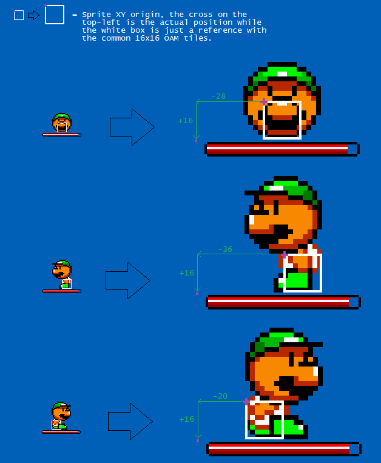

This document is a summary of how I implement the non-static (placed on the body of the sprite rather than a fixed position on the screen) sprite-based HP bar for the giant masked koopa boss.
There has to be some sort of information stored of some value tracking its HP, else technically it would have infinite HP or just die in one hit:
; How much hits to defeat. Do note that the hit counter, $1534, increments. !HitPoints = $09 |
JSR StompPoints ; give Mario points
LDA.b #!HurtSFX ;\ sound effect
STA.w !HurtBank ;/
LDA #$A0 ;\ Set ThrowFire timer
STA !sprite_stun_timer,x ;/
INC !1534,x ; increment sprite hit counter
LDA !1534,x ;\ If it has incremented to the "max", do death animation.
CMP.b #!HitPoints ; |
BEQ SpriteDead ;/ |
Like most ASM files, they often use labels and comments making it easier for the programmer to understand how the code runs. This shouldn't be hard to find its graphics routine, we can CTRL+F “Graphics” and...
;;;;;;;;;;;;;;;;;;;;;;;;;;;;;;;;;;;;;;;;;;;;;;;;;;;;;;;;;;;;;;;;;;;;;;;;;;;;;;;;;;;;;;;;;;
; graphics routine
;;;;;;;;;;;;;;;;;;;;;;;;;;;;;;;;;;;;;;;;;;;;;;;;;;;;;;;;;;;;;;;;;;;;;;;;;;;;;;;;;;;;;;;;;;
Properties: dw .green,.fire,.rocks,.jumping,.walking
.green db $7B,$3B
.fire db $79,$39
.rocks db $75,$35
.jumping db $77,$37
.walking db $7B,$3B
X_Disp: dw .green,.fire,.rocks,.jumping,.walking
.green
;[...] (a large table, but keep scrolling down and you'll get to the code)
Graphics:
PHA
ASL A
TAY
REP #$20
LDA X_Disp,y
STA $04
LDA Y_Disp,y
STA $06
LDA Tilemap,y
STA $08
LDA Properties,y
STA $0A
SEP #$20 |
Graphics: ;[GraphicalBar_For_HP] ;It's best to have this graphical bar code at the very start of "Graphics" so that branches would not skip ;over this code and cause the bar to disappear. STA $0F ;>You cannot push, call GetDrawInfo, then pull, because GetDrawInfo contains a code that destroy the return address, ;which will crash the game when the sprite goes offscreen. ; This is the graphics "image state" (what it shows), separate from "Behavior State" (what it does physically) as ;some of the frames are walking and the other is in its shell: ;A < $04 means in shell ;A >= $04 means standing upright ;Since this is used before and after calling %GetDrawInfo(), I choose to store it at $0F, an unused RAM at the moment. ;Here is the newly added code, because this is before GetDrawInfo, we can only get the bar values here and will do the OAM ;after calling GetDrawInfo. ;To obtain the graphical bar data, (like the amount of fill, the attributes and all that stuff), is virtually no different ;compared to the layer 3 version. The only difference is writing to OAM as opposed to layer 3 tiles. .InputRatio ;Quantity (HP) ;$1534 is the damage counter (increase by 1 on each hit, and dies when reaching a certain value (!HitPoints)), ;therefore this sprite uses an "inverted health system". ;To convert damage count to HP: HP = NumberOfHitsToKill - DamageCount ;I could use InvertQuantity, but because the sprite always take 1 damage from stomps and no other types of damage exists, ;and that its damage counter and !HitPoints (the fixed number of hits to defeat) are 8-bit, it is not needed, as this is faster. LDA #!HitPoints ;\HP = NumberOfHitsToKill - DamageCount SEC ;| SBC !1534,x ;| STA !Scratchram_GraphicalBar_FillByteTbl ;/Store HP into quantity. LDA #$00 ;>Set these following data to 0 since HP is 8-bit STA !Scratchram_GraphicalBar_FillByteTbl+1 ;>High byte quantity STA !Scratchram_GraphicalBar_FillByteTbl+3 ;>High byte max quantity LDA #!HitPoints ;\Max quantity STA !Scratchram_GraphicalBar_FillByteTbl+2 ;/ .InputGraphicalBarAttributes LDA.b #!Default_GiantMaskedKoopa_GraphicalBar_LeftEndPieces ;\Left end normally have 3 pieces. STA !Scratchram_GraphicalBar_LeftEndPiece ;/ LDA.b #!Default_GiantMaskedKoopa_GraphicalBar_MiddlePieces ;\Number of pieces in each middle byte/8x8 tile STA !Scratchram_GraphicalBar_MiddlePiece ;/ LDA.b #!Default_GiantMaskedKoopa_GraphicalBar_RightEndPieces ;\Right end STA !Scratchram_GraphicalBar_RightEndPiece ;/ LDA.b #!Default_GiantMaskedKoopa_GraphicalBar_MiddleLength ;\length (number of middle tiles) STA !Scratchram_GraphicalBar_TempLength ;/ .ConvertToBar PHX ;>Preserve sprite slot index JSL !CalculateGraphicalBarPercentage ;>Get percentage JSL !RoundAwayEmptyFull ;>Round away from empty and full for fill amount ;$00 = HP percentage (FirstFill) ;$1570 = Previous HP percentage (SecondFill), or the increasing fill amount to display when healing/battle starts. if !GiantMaskedKoopa_DisplayPreviousHP != 0 LDX $15E9|!addr ;>Get sprite index LDA !1570,x CMP $00 BCC ..Increase BEQ ..ShowCurrent ..Decrease ;Decrease, causes $1570 as a transperent bar to decrease towards HP percentage. LDA !1558,x ;\Don't decrease SecondFill until delay runs out. BNE ..Flicker ;/ DEC !1570,x BRA ..Flicker ..Increase ;In this state, when $1570 less than current HP percentage, ;do the filling animation by having $00 contain the value of $1558 every frame and the SFX. INC !1570,x LDA $13 AND.b #%00000001 BNE ..ShowPrev LDA #$23 STA $1DFC|!addr BRA ..ShowPrev ..Flicker ;In this state, every other frame displays previous HP ;(because HP percentage gets subtracted on every damage, ;while $1558 keeps its value temporary across frames), ;giving a transperent look LDA $13 AND.b #%00000001 BEQ ..ShowCurrent ..ShowPrev LDA !1570,x ;\When filling upwards or on every odd frames, $00 will contain the value STA $00 ;/of $1570, showing a filling animation or previous HP percentage instead of current HP percentage. ..ShowCurrent endif JSL !DrawGraphicalBar ;>get bar values. LDA #$01 ;\Use Level-sprite tileset STA $00 ;/ JSL !ConvertBarFillAmountToTiles ;>Convert tiles. PLX ;>Restore sprite slot index ;[...] |
REP #$20
LDA X_Disp,y
STA $04
LDA Y_Disp,y
STA $06
LDA Tilemap,y
STA $08
LDA Properties,y
STA $0A
SEP #$20
%GetDrawInfo()
LDA !sprite_smash_status,x
STA $03 ; | $03 = index to frame start (0 or 4)
PLA
CMP #$04
BCS AlternateFrames
LDA #$03
STA $0F
LDA $14 ;\ Frame counter ..
LSR #3 ; | Add in frame animation rate; More LSRs for slower animation.
AND #$03 ; | 01 means we animate between 2 frames (00 and 01).
ASL #2 ; | ASL x2 (0-4) makes it switch between the first byte and fifth byte,
STA $03 ;/ i.e. first animation and second animation. The result is stored into $03. |
| Output | Number of Bytes | Description |
|---|---|---|
| Y register | 1 (not stored) | Oam index |
| $00 | 1 | X position, relative to screen border |
| $01 | 1 | Y position, relative to screen border |
A lot can be explained by looking at the code in SMW-Graphical-bar-display/Pixi_CustomSprite/GiantMaskedKoopa/giant_masked_koopa.asm using a text editor (preferbly using notepad++ and using syntax-highlighting found in asar's asar181/ext/notepad-plus-plus), and CTRL+F “[GraphicalBar_For_HP]” (without quotes)
For the XY positioning of the health bar to be center-aligned with the main body of the sprite, consider looking at the image of how I found out:

Like I said, most sprites on SMWC is made up of 16x16, and the bar itself are 8x8s, so we need to manually set the size bit:
LDA ($08),y
STA $0302|!Base2,x
;[GraphicalBar_For_HP] Manually set tile size for the main body of the sprite
;Because most sprites are composed of 16x16 OAM tiles, and the bar being 8x8s, The GMK boss is NO exception.
;It is really not that hard, just preserve X or Y, depending on the sprite (GMK boss uses X, in this example),
;then take X or Y, whichever holds the OAM index (increments of 4) TXA or TYA, LSR #2, TAX or TAY to convert
;to slot numbering (increments of 1), and SET $0460, indexed by slot numbering's bit 1 (the 2nd last bit from the right) to 1.
PHX ;>Preserve OAM index
TXA ;\Convert OAM index numbering to slot numbering (increments of 1)
LSR #2 ;|
TAX ;/
LDA $0460|!addr,x ;\Force the size bit of the OAM extra bit to be 16x16 instead of potentially be 8x8
ORA.b #%00000010 ;|
STA $0460|!addr,x ;/
PLX ;>Restore OAM index |
Because we set the size bit, the FinishOAMWrite (either by calling JSL $01B7B3|!BankB or %FinishOAMWrite()), the Y input must be $FF, and for the number of tiles, thankfully, this isn't too hard, the number of tiles to write, minus 1, is stored in $0F already. It is easy to simply add by the number of tiles the bar uses:
LDY #$FF ; Y ends with the tile size .. 02 means it's 16x16 (Edit: the bar is 8x8s, and the body of the sprite is 16x16, so a mixture was needed; Y=$FF means Manuel)
LDA $0F ; A -> number of tiles drawn - 1.
CLC
ADC.b #!GiantMaskedKoopa_GraphicalBar_TotalTiles
; I drew 2 tiles, so 2-1 = 1. A = 01.
JSL $01B7B3|!BankB ; Call the routine that draws the sprite (finish OAM write).
RTS |